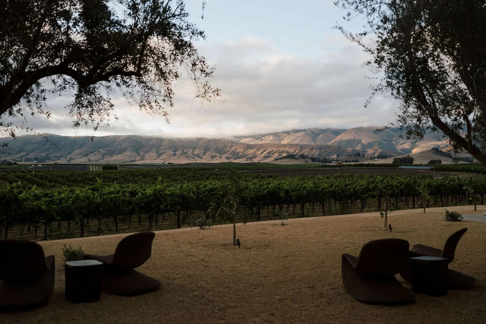
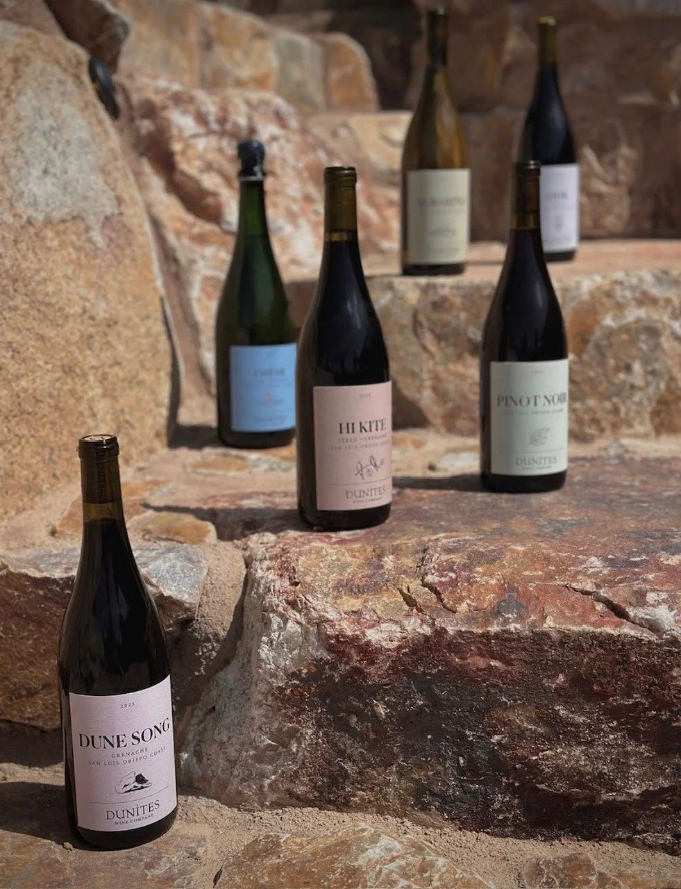
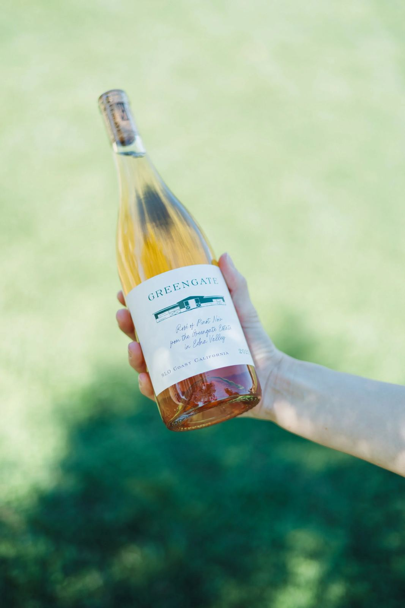
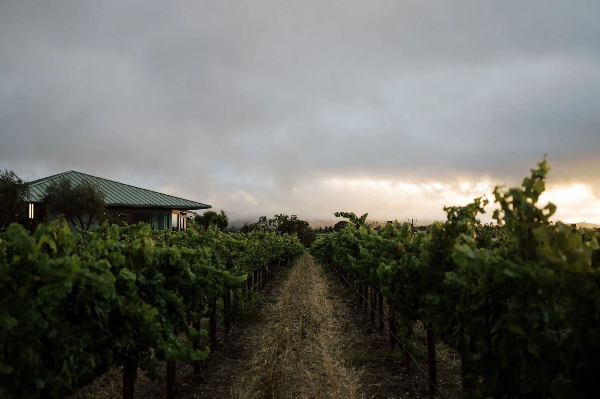
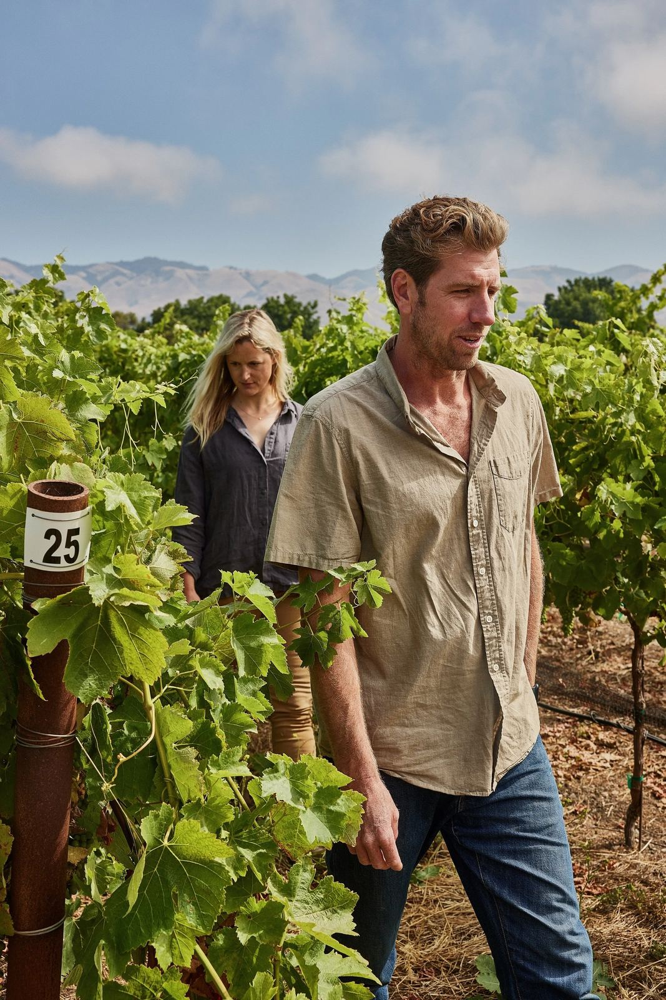
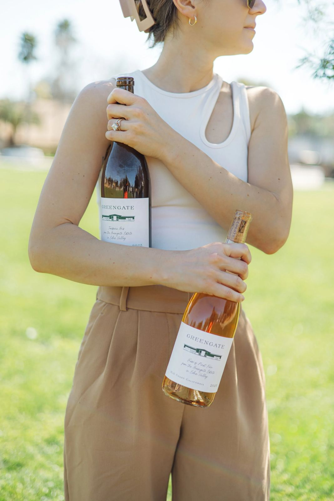

Make a Day of It
Taste, dine, stay
An afternoon at the tasting room and dinner at The Restaurant at Edna, six minutes down the road, with three private residences at Cavalli waiting at the end of the night.

Now Pouring · Edna Valley
Small-production wines from celebrated SLO Coast producers Dunites, Greengate, and Vestre, poured beneath the oaks with the valley at your feet.
The Tasting Room at Edna
Three of the SLO Coast's most admired producers pour side by side at Edna: small-production wines rooted in integrity and balance, each a genuine expression of the land and the season that shaped it.
Settle in on the patio beneath the oaks, taste through the cool-climate character of Edna Valley, and stay for dinner next door at The Restaurant at Edna. The tasting room and its vineyards are not on the Cavalli estate; Edna is just down the road, about 2.4 miles from Cavalli, a six-minute drive.

Dunites Wine Co.
Guided by a respect for nature, Dunites crafts vibrant, terroir-driven wines that showcase the cool-climate beauty of the SLO Coast, through organic farming and minimal intervention.
Whole-cluster fermentation, neutral oak, and patient aging on the lees bring purity, texture, and a seamless finish: soulful wines that tell the story of the vineyards they come from.

Greengate Wines
An estate winery born of more than a decade on the land: a 140-acre ranch in Edna Valley, with over 100 acres of meticulously tended vines cultivated long before the first bottle was made.
Every wine is estate grown, shaped by the cool, fog-kissed influence of the SLO Coast AVA and a single philosophy: let the land lead. Edna Valley, honestly grown and thoughtfully made.
Among the Vines



Photography courtesy of Edna, Anya McInroy, and Abrianna Rose Photography
Plan Your Visit
Edna is about 2.4 miles from Cavalli, a six-minute drive. Reservations are highly recommended. Taste in the afternoon, dine at The Restaurant at Edna from 5pm, then return to your residence at Cavalli.
Make a Day of It
An afternoon at the tasting room and dinner at The Restaurant at Edna, six minutes down the road, with three private residences at Cavalli waiting at the end of the night.